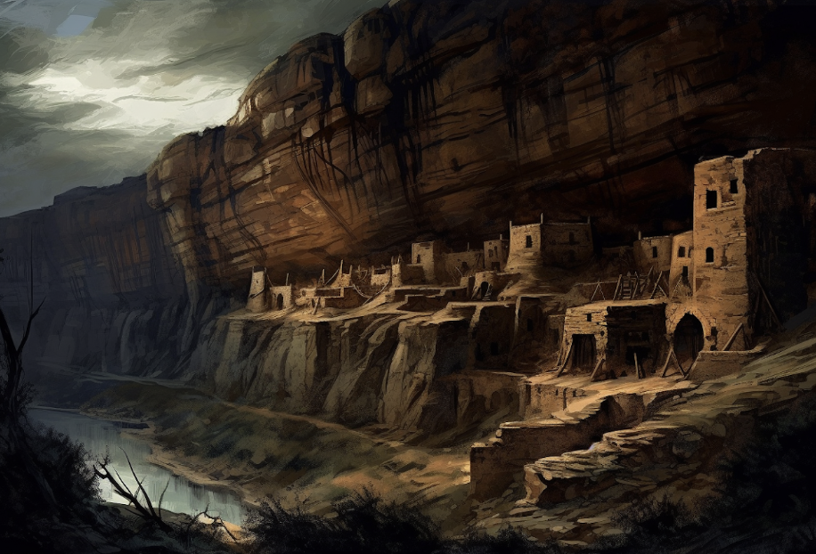

Grantville Martin was born in Lake Pleasant, NY and raised by members of the Hudson River School sometime in the late 1840s or Early 1850. No official birth records survive.
In the 1860s, he traveled to europe and studied with several impressionist and became active in the Bohemian movement before returning to the United States.
He eventually returned to America, traveled working for the Sherman, Williams, & Co, exchanged letters with several notable artists & scientists (See "Letters"), and began his Bird Period, notable for its blend of Impressionism and Surrealism.

The watercolor painting by Grantville Martin portrays a farm woman holding a shotgun, rendered in delicate and vibrant hues of blues, greens, and browns. The woman's stance exudes a sense of strength and confidence, as she gazes off into the distance with a resolute expression on her face. The brushstrokes are loose and flowing, creating a sense of movement and vitality in the figure and the surrounding landscape.
Martin's use of color in this piece is particularly noteworthy. The blues and greens of the landscape are contrasted with the warm browns of the woman's clothing, creating a striking visual balance. The painting's Impressionist style is evident in the artist's attention to the play of light and shadow on the woman's clothing and the surrounding foliage.
Furthermore, the shotgun held by the woman adds an element of tension and intrigue to the piece. The viewer is left to wonder what she is hunting or defending against, and what circumstances have led her to take up such a formidable weapon. This sense of narrative ambiguity only adds to the painting's overall appeal.
The Cliffside The painting by Grantville Martin depicts an ancient Native American cliff village, nestled high in the rocky crags of a rugged canyon. The use of light and shadow is particularly striking in this piece, with the bright sunlight casting deep shadows on the rocky cliffs and illuminating the rooftops of the dwellings.
The artist's loose and fluid brushwork imbues the scene with a sense of energy and movement, while the carefully rendered details of the cliff dwellings convey a strong sense of historical authenticity. The muted color palette of earthy browns and greys suggests a connection to the natural environment and a deep respect for the ancient culture that built these dwellings.
Martin's Impressionist style is evident in the way he captures the play of light on the landscape, infusing the scene with a sense of depth and atmosphere. The painting invites the viewer to imagine what life might have been like for the people who lived in these dwellings, and to contemplate the rich cultural heritage of the ancient Native American civilizations that once thrived in this region.
Photography